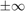

RGRID - Rectangular grid object
Contents
Syntax
R = rgrid(IVName,IVData) R = rgrid(IVName,IVData,IVRateBounds)
Description
R = RGRID(IVName,IVData,IVRateBounds) creates a rectangular grid object with independent variables and grid data specified by IVName, IVData and IVRateBounds. For an N-dimensional rectangular grid, IVName is an N-by-1 cell array of characters that specify the names of the independent variables. IVData is a N-by-1 cell array of column vectors that specify the grid data along each dimension. IVRateBounds is a N-by-1 double array with two columns, where each row corresponds to a parameter listed in IVNames, and each elements in the first column specifies a lower rate bound and each element in the second column specifies a upper rate bound. Each IVData{i} should be a vector of sorted, real data. If the rgrid contains only one independent variable then IVName can be specified as a single char, IVData can be specified as a single vector of sorted real data, and IVRateBounds can be specified as a 1-by-2 row vector of real numbers. R = RGRID(IVName,IVData) creates a rgrid with no limits on the rate bounds of the parameter, i.e. .
Example
% Create an RGRID object with independent variable 'a', grid data 4:10. r1 = rgrid('a',4:10)
RGRID with the following parameters: a: Gridded real, 7 points in [4,10], rate bounds [-Inf,Inf].
% Create an RGRID object with independent variable 'a', grid data 4:10 % and parameter rate bounds [-1 1]. r1 = rgrid('a',4:10,[-1,1])
RGRID with the following parameters: a: Gridded real, 7 points in [4,10], rate bounds [-1,1].
% Create a 2-dimensional RGRID object r2 = rgrid( {'a', 'b'}, {linspace(-2,2,12), 1:5},[-1 1;-4 8] )
RGRID with the following parameters: a: Gridded real, 12 points in [-2,2], rate bounds [-1,1]. b: Gridded real, 5 points in [1,5], rate bounds [-4,8].
% Access independent variable name along first dimension
r2.IVName{1}
ans = a
% Access independent variable rate bounds for parameter 'a'
r2.a.IVRateBounds
ans =
-1 1
% Replace independent variable rate bounds for parameter 'b'
r2.b.IVRateBounds = [-10 10]
RGRID with the following parameters: a: Gridded real, 12 points in [-2,2], rate bounds [-1,1]. b: Gridded real, 5 points in [1,5], rate bounds [-10,10].